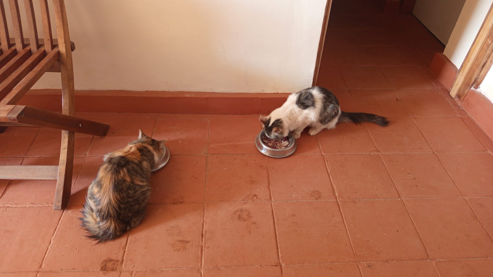
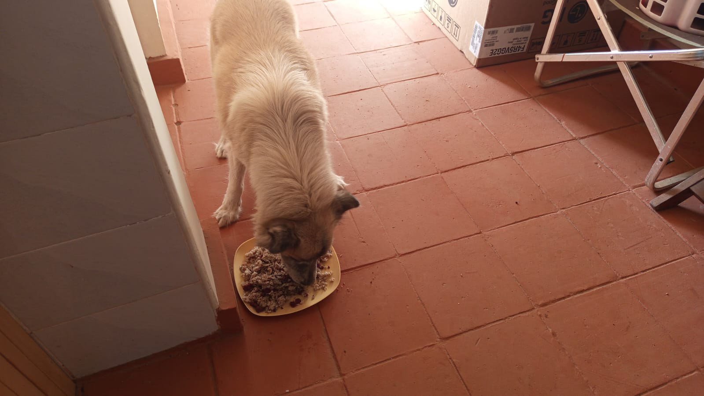
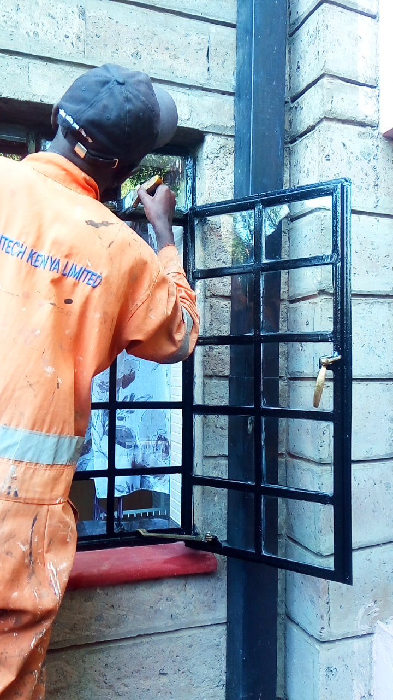
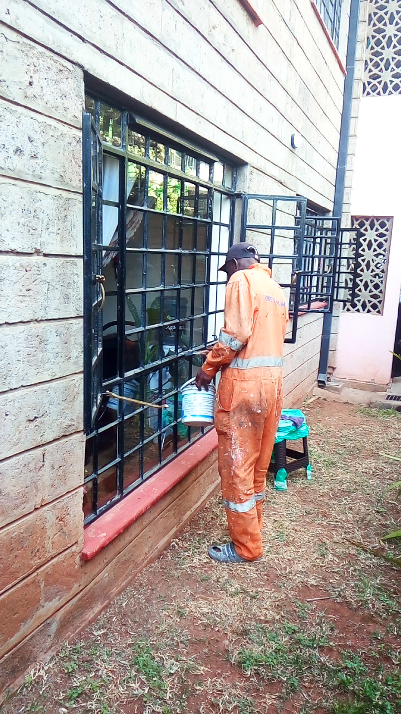

Mucheru World of Golf
Field operations at Mucheru World of Golf on Thursday, 1st October 2026 were supervised by Mr. Gichuhi and Ken, marking major advancements in putting green shaping, reservoir liner sealing, drainage backfill, boundary fence completion, and landscape palm alignment:
- Surplus Red Soil Application on Greens 9, 3, 4 & 8 (100% Course Milestone): Agronomy laborers applied, spread, and leveled surplus red loam topsoil around Greens 9, 3, 4, and 8 per Joe's instructions. With these four greens completed today, all 18 greens across the entire championship course have now received surplus red soil to build up aprons, feather borders into surrounding corridors, and provide fertile growing medium for future perimeter turf sodding.
- Dam 1 Geomembrane Plastic Thermal Welding: Specialized plastic welding of the heavy polyethylene reservoir liner continued at Dam 1. Technicians used thermal heat-welding equipment to seam adjacent geomembrane sheets together, creating a unified, continuous watertight barrier across the reservoir floor and slopes.
- Dam 3 Embankment String-Leveling & Liner Trench Tucking: Civil crews used taut string-lines around the entire perimeter crest of Dam 3 to level the earthen embankments, ensuring exact identical elevation all round for balanced, equal water overflow during replenishment. The outer edges of the polyethylene liner were neatly tucked into the excavated perimeter anchor trench and backfilled with soil to anchor the liner firmly in place.
- Green 7 Riversand Material Delivery: A commercial tipper lorry delivered 1 load of quality coarse riversand directly to Green 7, bringing total sand deliveries on Green 7 to 2 lorries to date.
- Teebox 7 Corner Palm Tree Relocation & Replanting: Field supervisors identified three mature palm trees planted excessively close together at the corner adjoining Teebox 7. The middle palm located directly at the corner angle was carefully uprooted and replanted in an open location to eliminate crowding. Additionally, an existing vacant planting hole was filled with a freshly brought palm tree, which was positioned, backfilled, and watered.
- Main Perimeter Drainage Pipeline Covered (Teebox 5 to Green 6): Earthwork laborers backfilled and covered the main perimeter drainage pipe trench from Teebox 5 all the way to Green 6, permanently protecting the underground drainage conduit against erosion and surface displacement.
- Hedge Seedlings Haulage to Chaka Farms Gate A: Mr. Gichuhi's pickup was deployed to haul extra living hedge seedlings that remained following boundary planting completion over to Chaka Farms, offloading them on the inner compound area near Gate A.
- Boundary Fencing Contractor Demobilization: The boundary fencing contractor and his installation crew completed 100% of their perimeter fencing assignment today, concluding all physical works and officially demobilizing their team from the site.
- Plumbing System Inspection & Maintenance: A certified plumber was on site conducting preventive maintenance and inspecting system fixations, pipe connectors, and water line joints across active distribution lines.
- Fence Posts & Timber Haulage (Farm Tractor): The estate farm tractor and trailer were utilized to transport recovered felled cedar fence posts and cut timber from the golf site and the Matiang'i parcel over to the Chaka Farms greenhouse storage facility.
Course Agronomy & Infrastructure Milestones Achieved
100% of all 18 putting greens across Mucheru World of Golf have now received surplus red soil application per Joe's agronomic design; the boundary fencing contractor has completed all work and departed; Dam 3 has reached precision string-line crest leveling with anchored liner; and Dam 1 plastic seaming is actively progressing.
Comprehensive drone and ground video documentation capturing today's operational progress at Mucheru World of Golf: Dam 1 polyethylene liner thermal welding, Dam 3 string-level embankment leveling and anchor trenching, surplus red soil spreading across Greens 9, 3, 4, and 8, riversand delivery to Green 7, corner palm tree relocation at Teebox 7, backfilling of perimeter drainage pipe from Teebox 5 to Green 6, and boundary fence completion.
18-hole putting green status audit showing the latest work completed and current condition for each green as of October 1, 2026:
| Green | Current Technical & Agronomic State | Milestone Status |
|---|---|---|
| Green 1 | Surplus red soil spread around outer surrounds and leveled (Sep 30). | Surplus Red Soil Applied |
| Green 2 | Surplus red soil spread around green collar and surrounds (Sep 30). | Surplus Red Soil Applied |
| Green 3 Today | Surplus red soil spread and leveled around surrounds per Joe's instructions (Oct 1). | Surplus Red Soil Applied |
| Green 4 Today | Surplus red soil spread and leveled around surrounds per Joe's instructions (Oct 1). | Surplus Red Soil Applied |
| Green 5 | Water pipeline connected from Peter's supply; overhead sprinklers running on mature grass (Sep 29). | Water Connected • Sprinklers On |
| Green 6 | Surplus red soil applied to raise and level surrounds (Sep 28). | Apron Raised • Palms Placed |
| Green 7 Today | Received 1 lorry riversand delivery (2 lorries delivered to date) (Oct 1). | Riversand Delivered |
| Green 8 Today | Surplus red soil spread and leveled around surrounds per Joe's instructions (Oct 1). | Surplus Red Soil Applied |
| Green 9 Today | Surplus red soil spread and leveled around surrounds per Joe's instructions (Oct 1). | Surplus Red Soil Applied |
| Green 10 | Surplus red soil spread around green collar and surrounds (Sep 30). | Surplus Red Soil Applied |
| Green 11 | Surplus red soil spread and leveled around surrounds (Sep 30). | Surplus Red Soil Applied |
| Green 12 | Surplus red soil spread and leveled around surrounds (Sep 30). | Surplus Red Soil Applied |
| Green 13 | Surplus red soil spread around surrounds to raise and match green level (Sep 29). | Surplus Red Soil Applied |
| Green 14 | Surplus red soil spread around surrounds to build up perimeter level (Sep 29). | Surplus Red Soil Applied |
| Green 15 | Surplus red soil spread around surrounds to raise perimeter level (Sep 28). | Apron Raised • Compacted |
| Green 16 | Surplus red soil spread around surrounds to blend with fairway (Sep 29). | Surplus Red Soil Applied |
| Green 17 | Surplus red soil spread around surrounds to raise and align levels (Sep 29). | Surplus Red Soil Applied |
| Green 18 | Surplus red soil spread and leveled around collar and surrounds (Sep 30). | Surplus Red Soil Applied |
Comprehensive 18-hole championship teebox platform audit tracking earthwork leveling, structural embankments, and playing corridor alignments as of October 1, 2026:
| Teebox | Current Technical & Earthwork State | Platform Status |
|---|---|---|
| Tee 1 | Championship launch platform completely reshaped, cut, and graded to design elevation using Backhoe Loader (Sep 24); received 1 lorry red soil delivery (Sep 26). | Platform Reshaped |
| Tee 2 | Playing launch platform completely reshaped, contoured, and graded using Backhoe Loader (Sep 24); received 1 lorry red soil delivery (Sep 26). | Platform Reshaped |
| Tee 3 | Playing launch platform completely reshaped, contoured, and graded using Backhoe Loader (Sep 24); received 1 lorry red soil delivery (Sep 26). | Platform Reshaped |
| Tee 4 | Championship launch platform completely reshaped, cut, and graded using Backhoe Loader (Sep 23); received 1 lorry red soil delivery (Sep 26). | Platform Reshaped |
| Tee 5 Today | Main perimeter drainage pipeline backfilled and covered from Teebox 5 to Green 6 (Oct 1). | Drainage Backfilled |
| Tee 6 | Precision leveling and compaction completed; fresh delivery of 1 lorry red loam topsoil unloaded at platform surrounds (Sep 26). | Red Soil In • Leveled |
| Tee 7 Today | Crowded corner palm uprooted and relocated; additional palm brought and planted into vacant hole (Oct 1). | Palms Relocated & Planted |
| Tee 8 | Graded, leveled, and contour-adjusted; fresh delivery of 1 lorry red loam topsoil unloaded directly on platform (Sep 26). | Red Soil In • Graded |
| Tee 9 | Playing platform leveled and surrounding perimeter ground graded (Sep 1); received 1 lorry red soil delivery (Sep 26). | Platform Leveled |
| Tee 10 | Graded and compacted platform serving the start of the back-nine playing corridor; received 1 lorry red soil delivery (Sep 26). | Platform Compacted |
| Tee 11 | Rough shaping, elevation grading, and Backhoe subsoil leveling completed (Sep 7); received 1 lorry red soil delivery (Sep 26). | Shaped & Graded |
| Tee 12 | Dual platforms established: primary championship tee resized; new forward Ladies' Tee platform constructed (Sep 5); received 1 lorry red soil delivery (Sep 26). | Dual Platforms Complete |
| Tee 13 | Playing platform completely reshaped, contour-cut, and precision leveled to design elevations using Backhoe Loader (Sep 25); received 1 lorry red soil delivery (Sep 26). | Platform Reshaped |
| Tee 14 | Playing platform reshaped, elevation precision-leveled, and protective boundary embankment reinforced (Sep 16); received 1 lorry red soil delivery (Sep 26). | Reshaped & Leveled |
| Tee 15 | Playing platform completely shaped and contour-leveled with backhoe loader (Sep 19); received 1 lorry red soil delivery (Sep 26); main HDPE waterline laid in boundary trench (Sep 15). | Shaped & Leveled |
| Tee 16 | Protective earthen boundary barrier between Tee 16 and Green 16 reshaped, graded, and reinforced using Backhoe Loader (Sep 25); received 1 lorry red soil delivery (Sep 26); platform leveled (Sep 20). | Barrier Berm Reworked |
| Tee 17 | Championship launch platform completely reshaped, contour-cut, and precision-graded to design elevation using Backhoe Loader (Sep 25); received 1 lorry red soil delivery (Sep 26). | Platform Reshaped |
| Tee 18 | Championship tee platform leveled; perimeter approach cleared and graded (Sep 1); received 1 lorry red soil delivery (Sep 26). | Platform Leveled |
Operations Agronomy & Engineering Synthesis
Putting Greens Progress: 18 of 18 greens (100%) have subgrade foundations excavated and membrane lined; 18 of 18 (100%) have volcanic pumice layers compacted; 18 of 18 (100%) have riversand foundation beds placed; 18 of 18 greens (100%) have received dedicated surplus red soil application per Joe's design; Green 7 received 2nd lorry riversand delivery; Green 5 is 100% grass-established with overhead sprinkler irrigation.
Championship Teeboxes Progress: 18 of 18 launch platforms (100%) are completely shaped and graded; all teeboxes have received quality red soil deliveries; palm tree spacing at Teebox 7 corner corrected with relocation and replacement; perimeter drainage backfilled from Teebox 5 to Green 6; boundary fence installation is 100% complete; Dam 1 plastic seam welding ongoing; Dam 3 embankments string-leveled with tucked liner edges.
Sequential field photography documenting surplus red soil spreading across Greens 9, 3, 4, and 8, riversand delivery at Green 7, Dam 1 plastic liner welding, Dam 3 embankment string-leveling and liner tucking, palm tree relocation, plumbing maintenance, drainage backfilling, and fence post tractor haulage:

Green 9 — Manual Red Loam Soil Spreading
Laborers using shovels to spread and grade rich red topsoil across the collar and surrounds of Green 9 per Joe's instructions.

Green Contouring — Surplus Red Soil Application
Construction crew systematically applying surplus red soil to build up perimeter aprons and blend green beds into the fairway.

Green 9 — Completed Surplus Red Soil Application
Panoramic overview of Green 9 showing the fully spread red loam soil covering the surrounds and contouring the green complex.

Green 7 — Commercial Riversand Delivery
Tipper lorry tipping a fresh load of coarse riversand onto Green 7 foundation bed, bringing the total delivered to date to two lorries.

Dam 1 — Unrolling & Positioning Polythene Liner
Field crew unrolling and aligning heavy-duty black polyethylene geomembrane sheets along the basin floor and slopes of Dam 1.

Dam 1 — Seam Overlap Preparation
Technicians overlapping adjoining sheets of geomembrane liner across Dam 1 bed in preparation for thermal plastic welding.

Dam 1 — Hot-Wedge Thermal Seam Welding
Close-up field documentation of the specialized heating and thermal welding process fusing adjacent polyethylene liner edges together.

Dam 1 — Heat Seaming of Reservoir Liner
Skilled technician executing heat-bonded plastic welding along the longitudinal seam between geomembrane sheets.

Dam 1 — Watertight Plastic Seam Fusion
Specialized thermal welding tool bonding the polyethylene liner panels into a continuous, impenetrable reservoir membrane.

Dam 3 — Panoramic Reservoir Basin Overview
Wide-angle view of Dam 3 reservoir featuring installed polyethylene liner and perimeter earthen embankments.

Dam 3 — Leveled Embankments & Tucked Liner Edge
Completed perimeter embankment leveled with taut string-lines, with liner edges neatly folded into the anchor trench.

Dam 3 — Embankment Leveling & Soil Compaction
Civil laborers shaping and compacting soil along the perimeter embankment to lock in the tucked polyethylene liner.

Dam 3 — Tucking Liner Edges into Anchor Trench
Ground crew tucking the outer lip of the polyethylene liner beneath soil inside the anchor trench to firmly anchor the lining.

Dam 3 — Construction Crew Anchor Trenching
Site team using hand hoes and shovels to backfill and tamp down soil over tucked liner edges along the leveled crest.

Teebox 7 Corner — Relocated & Replanted Palm Tree
Mature palm tree successfully uprooted from crowded cluster at Teebox 7 corner, replanted in an open location, and watered.

Irrigation Network — Plumber Inspection & Fittings
Certified site plumber checking PVC valves, mainline pressure connectors, and water distribution fittings on site.

Water Infrastructure — Preventive Plumbing Maintenance
Plumber servicing pipeline joints and system connections to maintain peak hydraulic performance across the course.

Boundary Corridor — Drainage Pipe Backfilling
Site workers shoveling soil to backfill and cover the perimeter drainage pipeline trench along the course boundary fence.

Asset Transport — Tractor Hauling Fence Posts
Blue farm tractor and trailer loaded with felled cedar fence posts collected from the golf site and Matiang'i parcel for transfer.

Timber Logistics — Moving Cut Timber to Staging Area
Transport crew stacking cut timber and fence posts at the designated storage aggregation point.
Chaka Farms
Daily operations at Chaka Farms on Thursday, 1st October 2026 centered on structured dairy cow milking routines, commercial sales dispatches, internal livestock and staff rations, compound upkeep, and canine unit conditioning:
- Dairy Cow Milk Production & Commercial Sales Dispatches: Kamandau executed the morning and evening dairy milking sessions. Gross daily production reached 7.0 Litres harvested across both sessions (4.0L morning / 3.0L evening). Out of this gross harvest, 5.0 Litres (2.5L morning / 2.5L evening) were sold and dispatched for commercial revenue.
- Internal Farm Milk Allocations: Routine daily on-farm allocations totaled 2.0 Litres: 1.0 Litre was disbursed as nutritional milk rations for young goat kids (0.5L morning + 0.5L evening), 0.5 Litre was allocated for Gladys (staff ration, morning), and 0.5 Litre was allocated for the Maasai security guard (morning). Gross harvest equals commercial sales plus internal allocations with 100% volume accounting.
- Greenhouse Material Transfers & Fencing Posts Storage: The blue farm tractor hauled felled cedar fence posts and cut timber salvaged from the golf development corridor and Matiang'i land directly into the Chaka Farms greenhouse staging facility for secure storage and upcoming perimeter maintenance.
Chaka Farms Operations Summary
Dairy production achieved 7.0 Litres gross harvest (5.0L sold commercially + 2.0L allocated for goat kids and farm staff). Recovered cedar fence posts and cut timber were successfully aggregated and stored in the estate greenhouse.
Quantitative reconciliation of gross dairy harvest, commercial sales dispatches, and internal farm allocations for Thursday, 1st October 2026:
| Production & Allocation Category | Morning Session | Evening Session | Daily Total | Accounting Classification |
|---|---|---|---|---|
| Commercial Milk Sales (Dispatched) | 2.5 L | 2.5 L | 5.0 L | Commercial Sales Outflow |
| Goat Kids Milk Ration | 0.5 L | 0.5 L | 1.0 L | Internal Farm Allocation (Livestock) |
| Gladys Allocation (Staff) | 0.5 L | — | 0.5 L | Internal Farm Allocation (Staff) |
| Maasai Allocation (Security) | 0.5 L | — | 0.5 L | Internal Farm Allocation (Security) |
| Total Internal Farm Allocations | 2.0 L | Total Internal Outflow | ||
| Total Gross Cow Milk Harvested (Sales + Allocations) | 7.0 L | 100% Accounted Production (4.0L AM / 3.0L PM) | ||
📌 Note from Dennis — Milk Reconciliation & Yield Ground Truth
We realized there was a small misunderstanding on how the milk was being recorded: in earlier daily reports, the morning and evening numbers were being treated as the total milk produced, with 2 litres then subtracted. However, Kamandau was actually recording the milk that was sold in the morning and evening. The 2 litres for the goat kids and staff were given out separately on the farm, on top of what was sold. The cows are producing 2 litres more each day (7.0L gross yield). Starting with today's report (1st October), the ledger clearly distinguishes: Commercial Milk Sold (5.0L), Milk Used on Farm (2.0L), and Total Milk Produced (7.0L) — 100% accounted for with zero discrepancy.
Daily behavioral conditioning, physical exercise, and grounds cleanliness routines conducted on Thursday, 1st October 2026:
- Morning Leash Walking & Pack Exercise: Willy conducted structured morning exercise routines, walking all working dogs on-leash to maintain high physical conditioning, cardiovascular health, and calm pack cohesion.
- Kennel Sanitation & Hygiene Maintenance: Thorough daily cleaning and disinfectant washing executed across all kennel stalls, resting benches, and exterior runs to uphold peak biosecurity.
- Kennel Manners & Impulse Control: Working dogs underwent focused behavioral conditioning reinforcing kennel patience, boundary manners, and calm waiting behavior before feeding.
- "Paw" (Pow) Command Conditioning: Precision obedience sessions drilling responsiveness to the "paw" command, strengthening handler communication and handler focus.
- Estate Compound Cleanliness & Upkeep: Margaret and Monica performed general compound maintenance and sweeping across farm pathways, driveways, and facility environs.
Canine Conditioning & Estate Grounds Note
Consistent leash exercise and command conditioning ensured excellent temperament and obedience across all dogs. Facility sanitation and estate grounds cleanliness were maintained to high standards.
Photographic documentation of farm logistics, showing tractor delivery of recovered cedar fence posts and cut timber to the Chaka Farms greenhouse storage facility:

Greenhouse Logistics — Tractor Delivery of Fence Posts
Blue farm tractor delivering a full trailer load of recovered cedar fence posts directly to Chaka Farms greenhouse storage facility.
Kabete Residence
Civil construction, structural foundation reinforcement, and drainage installation progressed at Kabete Residence on Thursday, 1st October 2026. Daily operational updates were overseen and shared by Njoki:
- Ballast Stone Aggregate Delivery (2 Trucks Offloaded): Two heavy commercial tipper truckloads of clean crushed ballast stone aggregate were successfully delivered and offloaded on site along the access driveway, stockpiled ready for concrete foundation mixing.
- Outdoor Fireplace Stone Foundation Backfilling: Construction artisans backfilled red laterite soil around structural foundation quarry stones on the outdoor fireplace terrace, compacting the base to create a stable, consolidated subgrade.
- Damp Proof Membrane (DPM) & BRC Mesh Reinforcement: Heavy-gauge black waterproof DPM paper was laid out across the leveled fireplace foundation sub-base. Steel fixing artisans positioned and tied heavy welded BRC fabric wire mesh reinforcement over the membrane, preparing the structural platform for concrete slab casting.
- Subsurface Drainage (Gully Trap & 4-Way Waste Pipes): Certified plumbers installed subsurface PVC drainage connections, precisely bedding and connecting a heavy-duty gully trap and 4-way branch junctions for rainwater runoff and domestic wastewater drainage lines.
- Forest Retaining Wall & Basement Column Rebar Fabrication: On the sloping forest boundary, artisans bent, shaped, and tied structural steel reinforcement bars for column cages and link stirrups. These rebar cages are engineered for the mass-gravity retaining wall and basement foundation to permanently stabilize the excavated slope.
- Domestic Pet Wellness Care: Daily nutrition and wellness routines were completed for Kabete resident pets. Ajabu the Golden Retriever was fed on the veranda, and resident cats (Mocha and Aiko) enjoyed their meals in clean stainless steel bowls.
Kabete Residence Progress Summary
Two ballast truckloads offloaded; outdoor fireplace terrace foundation backfilled with DPM waterproof membrane and BRC mesh laid; PVC gully trap and waste pipes installed; steel column cages bent for forest retaining wall; and resident pets fed.
Sequential field photographic documentation covering ballast deliveries, fireplace terrace stone backfilling, DPM and BRC mesh installation, subsurface gully trap plumbing, forest retaining wall rebar fabrication, and domestic pet care:

Fireplace Foundation — Tipper Offloading Crushed Ballast
Heavy commercial tipper truck offloading crushed stone ballast aggregate along the Kabete Residence access driveway.

Materials Delivery — Second Ballast Truck Offloading
Additional consignment of crushed stone aggregate tipped and staged for fireplace terrace slab casting.

Outdoor Fireplace — Stone Foundation Backfilling
Artisans backfilling red laterite soil around structural foundation stones to establish a solid, level footing.

Slab Construction — Laying DPM Paper & BRC Mesh
Heavy-duty black damp proof membrane (DPM) rolled out across the terrace foundation with steel BRC mesh laid over top.

Slab Reinforcement — Aligning BRC Fabric Mesh
Construction crew positioning and tying welded BRC wire mesh reinforcement over the protective waterproof DPM sheet.

Drainage Infrastructure — Gully Trap & 4-Way Waste Pipes
Plumbing installation of PVC gully trap and multi-way branch connectors for terrace wastewater and rainwater drainage.

Forest Retaining Wall — Carrying Bent Column Cages
Steel fixing artisan in hi-vis vest carrying pre-fabricated column rebar cages down the red soil slope at the forest retaining wall site.

Steel Reinforcement — Assembled Column & Basement Rebar
Stacked pre-bent structural rebar links and tied column cages laid out on red earth, ready for retaining wall foundation casting.

Forest Slope Excavation — Retaining Wall Trench
Excavated red soil trench on the forest boundary slope showing partially placed rebar cages and hand tools.

Domestic Pet Care — Mocha & Aiko Mealtime
Resident cats Mocha and Aiko dining peacefully from separate stainless steel bowls on the shaded veranda tiles.

Domestic Pet Care — Ajabu Mealtime
Ajabu the Golden Retriever enjoying his nutritious daily meal on the tiled terrace floor at Kabete Residence.
Rose Park Apartment
Architectural renovation operations at Rose Park Apartment reached a major final completion milestone on Thursday, 1st October 2026. Daily updates were overseen and shared by Njoki:
- Window Paint Works 100% Complete Across All Areas: The specialized painting contractor completed full multi-coat protective enamel paintwork on every exterior window frame, burglar-proof grill, and structural window surround across the apartment building.
- Main Bathroom Window: Painted with weather-resistant high-gloss black enamel on metal security bars, finished with a contrasting red stone sill.
- Kitchen Area Double Windows: Both kitchen multi-pane window frames and exterior burglar bars received complete black gloss coats, cured and sealed against moisture.
- Back Facade Window: Fully coated in protective black enamel with operable hinged casement sections and vibrant red painted sill.
- Laundry Utility Area Window: Metal security grills painted in pristine black gloss adjoining decorative concrete breeze blocks.
- Sitting Room Tall Window: Large window assembly in the private side walkway completed in black enamel gloss with red painted stone sill.
- Narrow Slit & Ventilation Windows: All slender ventilation and bathroom slit windows around the stone exterior walls were fully painted, achieving uniform architectural presentation across the property.
Rose Park Milestone Achievement
100% of all exterior window paint works at Rose Park Apartment are now fully complete, inspected, and signed off. All metal burglar bars, casement frames, and red window sills are completely refurbished.
Sequential field photography documenting completed architectural enamel painting across all exterior window assemblies, burglar bars, and sills:

Architectural Painting — Enamel Application on Window Grills
Artisan painter in protective orange coveralls applying black gloss enamel paint to exterior burglar-proof window grills.

Metalwork Refurbishment — Coating Exterior Window Frames
Precision brushwork coating multi-pane window frames and security bars with durable protective black enamel paint.

Main Bathroom — Completed Black Window & Red Sill
Finished main bathroom window showcasing clean black gloss burglar bars set against stone masonry and contrasting red painted sill.

Back Facade — Completed Window Painting
Back exterior window fully coated in black gloss enamel paint with freshly painted red sill, framed by lush climbing ivy.

Kitchen Area — Completed Double Window Painting
Double window set outside the kitchen fully painted in protective black gloss with vibrant red sills, viewed on stone facade.

Laundry Area — Completed Utility Window Paintwork
Laundry utility window fully painted with clean black metal bars, positioned next to decorative concrete breeze blocks.

Sitting Room — Completed Tall Window Painting
Tall sitting room window in private access passage completely refurbished with glossy black enamel paint and red sill.

Ventilation Windows — Completed Narrow Slit Window
Slender bathroom ventilation slit window completed with immaculate black metal framing and red sill paintwork.

Exterior Facade — Refurbished Slit Window
Additional narrow stone facade window coated in weather-resistant black enamel paint with contrasting red painted sill.

Building Perimeter — Finished Architectural Window Paint
Final narrow exterior window fully painted and cured, completing 100% of all window painting works across Rose Park Apartment.